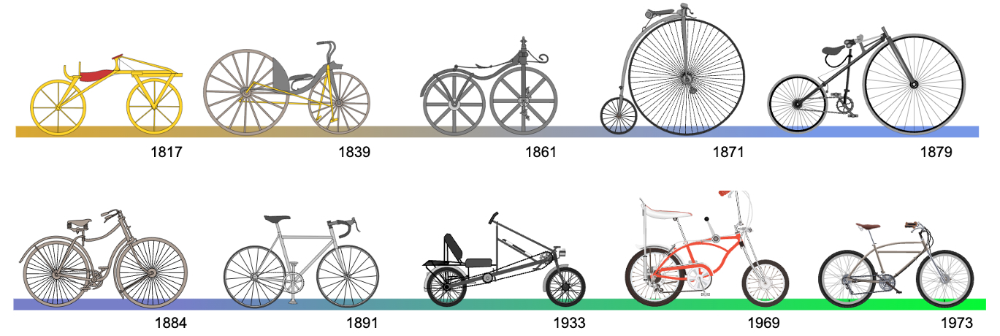

CS111 & EIE111 -- C++ Programming 2024 Spring
Designer of this project: Zhiyao Liang
zyliang@must.edu.mo
March. 06, 2024
The above picture, found on the Internet [1], shows the bicycle design evolving based on reasonable ideas. Some practical or reasonable ideas should also drive the migration from C to C++. This project is designed to explore the ideas of C++'s evolution.
C++ is designed to be more convenient than C, especially for programming scenarios involving abstraction. Here, the word "abstraction" relates to other jargon, such as Abstract Data Type (ADT), interface, encapsulation, data hiding, etc.
This project is based on possible customer requests to use music player devices. Such a music player should satisfy the following conditions:
A music player's interface exposes the above functions to a customer. However, quite some details of the device should be hidden from a customer because customers commonly do not care about technical details like the digital format of the media of a song or the memory structure of the device.
In this project, we will write three different versions of programs using C and C++ to experience the advantages of C++ over C.
Be sure that some recommended compilers for C and C++ are installed on your computer and can be used at the command line. For more on the recommended compilers, see Appendix A. 2.
A file code.zip is provided. After unzipping it, its folder contains the following content:
Compile_and_run folder contains the makefile and running records (screen records of running executable files) for Windows or Mac.Utility folder contains the code for generally helpful tools, not just for the Music Player program. It includes two groups of files.
util.h and util.c define some general tools, including the definition of a struct Bytes describing a sequence of bytes. test_util.c is the testing file.util2.h and util2.cpp implement a Bytes class for a similar purpose. test_util2.cpp is the testing file.SongPlayer_v1 contains a C program specifying the interface using a common C style.SongPlayer_v2 contains a C program that specifies the interface using a class-like style.SongPlayer_v3 contains a C++ program that specify the interface using the C++ way.code.zip and unzip it into some folder containing the provided program files.| stage number | code files | executable file (.exe or .out) |
|---|---|---|
| 1 | util.c | test_util |
| 2 | song_player_v1.c | test_v1 |
| 3 | song_player_v2.h, song_player_v2.c | test_v2 |
| 4 | util2.h, util2.cpp | test_util2 |
| 5 | song_player_v3.h, song_player_v3.cpp, test_song_player_v3.cpp | test_v3 |
pjt1_report.docx.pjt1_self_grading.xlsx.pjt1_QA.docxcode.zip and zip this folder as a .zip file.pjt1_report.docx.pjt1_self_grading.xlsx.pjt1_QA.docxThis project covers practicing a wide range of knowledge items of C and C++. Some knowledge items that may not be familiar to a person who has learned C include:
.h file (C style)string and vector.<< [] += = gcc for C programs and g++ for C++ programs. MinGW provides these compilers.cl (provided by Visual Studio Community) for C and C++.gcc for C programs and g++ for C++ programs.The make program is usually available on Mac OS or Linux. A similar tool recommended for Windows is mingw32-make, provided after MinGW is installed. See [6] for more information on installing such a tool on Windows.
A text file named makefile (case insensitive) records the needed rules for compiling a program. A rule usually has the form:
goal: supporting file names
a command to generate the target
After make (or mingw32-make) is installed, we do the following to execute a compiling rule to generate a target
- Step 1: at the command line, change the current folder to the one where the file named "makefile" is located.
- Step 2: use the command:
make goal
The power of make is recursive. When executing a rule to reach or generate a goal, all the dependent files described in the rule need to be available; when one of the supporting files is missing, other rules for generating it will be executed...
For example, for this project, the following commands are possible:
make all: generate all the needed executable files depending on binary (.o or .obj) files.make util.o: generate the file util.omake test_util.exe: generate the file test_util.exe, and all the depending on binary files.[1] "File: Bicycle evolution-fr.svg"
https://upload.wikimedia.org/wikipedia/commons/d/d6/Bicycle_evolution-fr.svg
[2] "C++ Primer Plus (Developer's Library)", 6th Edition, Stephen Prata, 2011, Addison-Wesley Professional.
[3] "C Primer Plus, 6th Edition", 6th Edition, Stephen Prata, 2014, Addison-Wesley Professional.
[4] "cppreference.com reference"
https://cppreference.com
[5] "cplusplus.com reference"
https://cplusplus.com/reference/
[6] "How to Install and Use “Make” in Windows"
https://www.technewstoday.com/install-and-use-make-in-windows/
{kind=link}